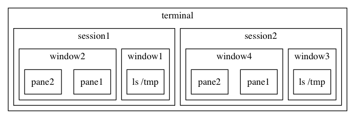
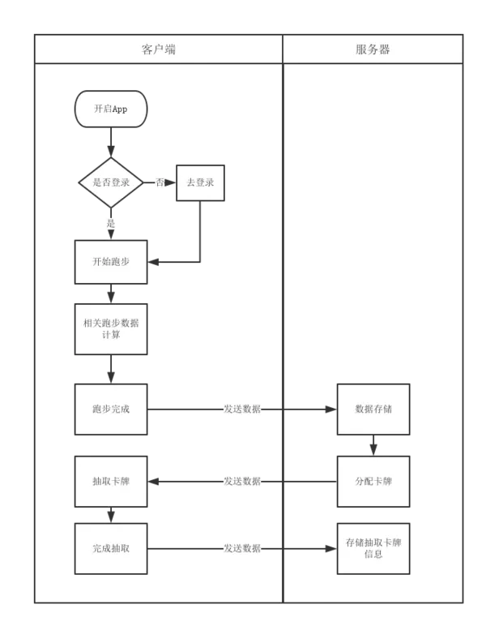
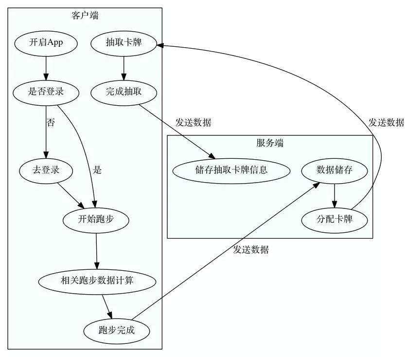

程序员的绘图利器 graphviz
马云曾经说过：『一图胜千言』
对于大多数程序员来说，都不想在样式方面花太多的时间（至少不是在书写内容的同时去关心样式），这大概就是 markdown 流行的原因之一吧。 同样的，在作图时，如果可以不去关心样式而把精力集中在图的内容上，那想必是极好的。
而绘图工具 graphviz 和其使用的 dot 语言就是这样一套『所想即所得』的绘图工具。
dot 语言就是一套 DSL，也就是说，可以把图片用代码的形式表现出来，这样易于修改，也可以做版本控制。
废话不多说，下面进入实战，首先是安装，Mac 下：
brew install graphviz
首先看一个例子，这是一副 tmux 的架构图（出自『tmux 快速入门』）

其对应的 dot 文件如下：
digraph tmux{
node[shape=record]
subgraph cluster_terminal{
label ="terminal";
subgraph cluster_session2{
label = "session2";
subgraph cluster_window3 {
label="window3";
pane6 [label="ls /tmp"];
}
subgraph cluster_window4 {
label="window4";
pane7 [label="pane1"]
pane8 [label="pane2"]
}
}
subgraph cluster_session1{
label = "session1";
subgraph cluster_window1 {
label="window1";
pane2 [label="ls /tmp"];
}
subgraph cluster_window2 {
label="window2";
pane3 [label="pane1"]
pane4 [label="pane2"]
}
}
}
}
这张图的特点就是其中的内容都是简单的包含关系，所以代码中使用了大量的 =subgraph=。
再来看一个例子：

这是一个典型的流程图，观察它的结构，可以发现：
- 有两个子图（客户端和服务端）
- 有一处分叉点
- 都是单向关联
根据『所想即所得』的原则，我们只要先把要表达的东西写下来：
第一步，创建好 nodes：
digraph run{
edge [style="dashed"];
a [label="开启App"];
b [label="是否登录"];
c [label="去登录"];
d [label="开始跑步"];
e [label="相关跑步数据计算"];
f [label="跑步完成"];
g [label="数据储存"];
h [label="分配卡牌"];
i [label="抽取卡牌"];
j [label="完成抽取"];
k [label="储存抽取卡牌信息"];
}
第二步，绘制子图（客户端和服务端）
subgraph cluster_client{
label="客户端";
bgcolor="mintcream";
a;
b;
c;
d;
e;
f;
i;
j;
}
subgraph cluster_server{
label="服务端";
bgcolor="mintcream";
g;
h;
k;
}
第三步，关联关系
a -> b;
b -> c;
b -> d;
c -> d;
d -> e;
e -> f;
f -> g;
g -> h;
h -> i;
i -> j;
j -> k;
第四步，添加关系描述
a -> b;
b -> c [label="否"];
b -> d [label="是"];
c -> d;
d -> e;
e -> f;
f -> g [label="发送数据"];
g -> h;
h -> i [label="发送数据"];
i -> j;
j -> k [label="发送数据"];
最终代码如下：
digraph run{
edge [style="dashed"];
a [label="开启App"];
b [label="是否登录"];
c [label="去登录"];
d [label="开始跑步"];
e [label="相关跑步数据计算"];
f [label="跑步完成"];
g [label="数据储存"];
h [label="分配卡牌"];
i [label="抽取卡牌"];
j [label="完成抽取"];
k [label="储存抽取卡牌信息"];
subgraph cluster_client{
label="客户端";
bgcolor="mintcream";
a;
b;
c;
d;
e;
f;
i;
j;
}
subgraph cluster_server{
label="服务端";
bgcolor="mintcream";
g;
h;
k;
}
a -> b;
b -> c [label="否"];
b -> d [label="是"];
c -> d;
d -> e;
e -> f;
f -> g [label="发送数据"];
g -> h;
h -> i [label="发送数据"];
i -> j;
j -> k [label="发送数据"];
}
最后使用 dot 命令生成需要的格式即可：
dot -T png source.dot -o dist.png

可以看到布局并不如原图那样完美，因为 graphviz 本来就是为了让用户可以把关注点放在 node 之间的关系上而并非布局上，因此做了自动布局，这在关系比较复杂的情况下会非常好用。 使用 dot 语言绘图可以有效提升生产力并且降低维度成本，并且主流编辑器都有相应插件，非常推荐程序员和产品经理使用。